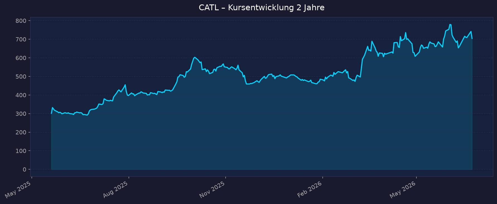
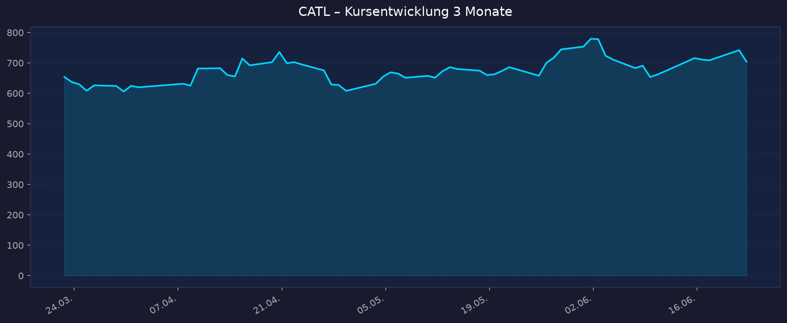

These: Weltmarktführer für Batterien (~40 % EV-Marktanteil), HK-Linie seit IPO Mai 2025 stark gestiegen, Gewinn +33–48 %. Hauptrisiken: Preiskrieg/Margendruck und US-Geopolitik (Pentagon-Blacklist).
📈 1. Kursentwicklung
Aktueller Kurs (HK-Linie): 704,00 HKD | Veränderung: Konsolidierung nach 52W-Hoch (am 22.06. ~742 HKD, davor Rücksetzer von 794,50 HKD am 02.06. wegen Gewinnmitnahmen) Heimatlisting Shenzhen (300750.SZ): ~409,00 CNY (Stand 22.06.2026) Marktkapitalisierung: ca. 2,0 Bio. CNY / ~273 Mrd. USD (weltweit Top-62)
Chart – 2 Jahre (HK-Linie existiert erst seit Mai 2025, daher verkürzt)

Chart – 3 Monate

| Zeitraum | Kurs Start | Kurs Ende | Veränderung |
|---|---|---|---|
| Seit IPO (20.05.2025) | 301,59 HKD | 704,00 HKD | +133 % |
| 3 Monate | 653,76 HKD | 704,00 HKD | +7,7 % |
| 52-Wochen-Hoch | — | 794,50 HKD (02.06.2026) | — |
| 52-Wochen-Tief | — | 291,93 HKD | — |
Hinweis: Währung HKD (HK-Linie). Shenzhen-Linie notiert in CNY und liegt strukturell tiefer; HK-Aktien handeln bei CATL mit Aufschlag. Ø Handelsvolumen HK-Linie ~4,5 Mio. Stück/Tag (3M).
💹 2. KGV-Entwicklung (Kurs-Gewinn-Verhältnis)
Aktuelles KGV (TTM, Shenzhen-Basis): ~22,5
| Zeitraum | KGV | Einordnung |
|---|---|---|
| Aktuell (Juni 2026) | ~22,5 | 38 % unter 10-Jahres-Median (36,1) |
| 10-Jahres-Median | ~36,1 | historisch deutlich höher |
| 2024 | ~22,5 | stabil |
Bewertung: Trotz Kursverdopplung der HK-Linie ist das KGV moderat, weil der Gewinn parallel stark gewachsen ist (2025: +42 %; Q1 2026: +48,5 %). Im historischen Vergleich eher günstig bewertet. GuruFocus GF-Score 96/100. Fair-Value-Schätzungen reichen von ~322 CNY (GuruFocus, leicht überbewertet) bis 527–558 CNY (Simply Wall St / Morningstar, unterbewertet) – die Spannweite zeigt die Bewertungsunsicherheit.
💰 3. Sales Multiple (Kurs-Umsatz-Verhältnis / P/S)
Aktuelles P/S-Verhältnis: ~4,7 (Marktkap. ~2,0 Bio. CNY / Umsatz 2025 423,7 Mrd. CNY; eigene Berechnung)
| Zeitraum | P/S Ratio | Einordnung |
|---|---|---|
| Aktuell | ~4,7 | moderat für einen Marktführer mit ~16–19 % Nettomarge |
| Verlauf 2025/2026 | steigend | parallel zum Kursanstieg, aber durch Umsatzwachstum gedämpft |
Trend: Steigend, aber fundamental getragen. Ein P/S um 4–5 ist für einen Hardware-/Materials-Konzern hoch, angesichts ~40 % Weltmarktanteil und zweistelliger Nettomarge jedoch nicht extrem.
📊 4. Handelsvolumen (Trading Volume)
| Zeitraum | Ø Tagesvolumen | Auffälligkeiten |
|---|---|---|
| 3-Monats-Durchschnitt (HK) | ~4,5 Mio. Aktien | hohe Liquidität |
| Seit IPO | hoch | IPO Mai 2025 war mit 5,2 Mrd. USD größte Notierung des Jahres weltweit |
| Volumen-Peak | — | Debüt-Tag (+16 % bzw. zeitweise +125 % je nach Quelle) und um 52W-Hoch Anfang Juni 2026 |
Volumentrend: Sehr liquide Aktie, starkes institutionelles Interesse seit dem HK-Listing. Detaillierte Volumen-Historie der Shenzhen-Linie: nicht verfügbar.
🏦 5. Insider Trades (letzte 2 Jahre)
Detaillierte Insider-Transaktionsdaten (Name, Datum, Stückzahl) für die HKEX-/SZSE-Listung: nicht verfügbar über die genutzten Quellen (SEC Edgar/OpenInsider decken nur US-Listings ab; CATL ist nicht US-gelistet).
Hinweis: Als chinesisches A-/H-Aktien-Unternehmen unterliegt CATL der chinesischen bzw. Hongkonger Meldepflicht, nicht der SEC. Eine belastbare Insider-Auswertung war im Rahmen dieser Recherche nicht möglich.
🩳 6. Short-Positionen
Short-Interest-Daten für die Shenzhen-A-Aktie und die HK-Linie sind über die genutzten Quellen (Finviz/FINRA, US-fokussiert) nicht verfügbar.
Einschätzung: Leerverkäufe sind am chinesischen A-Markt stark reguliert und eingeschränkt; an der HKEX sind Shorts möglich, aber keine konsolidierten Daten greifbar. Keine belastbare Aussage möglich.
🗞️ 7. Aktuelle Nachrichten
| Datum | Quelle | Nachricht | Relevanz |
|---|---|---|---|
| 18.06.2026 | Fitch | Rating-Upgrade von A- auf A (stabiler Ausblick) – stärkeres Geschäftsprofil, hohe Profitabilität | Hoch |
| Juni 2026 | Citi | Kursziel auf 888 HKD angehoben; FY2026-Nettogewinn >100 Mrd. RMB erwartet | Hoch |
| 02.–08.06.2026 | Detroit News / CleanTechnica | CATL erwartet, dass Energiespeicher bis 2030 ~50 % des Umsatzes ausmachen (heute ~25 %) | Hoch |
| 03.06.2026 | mehrere | Allzeithoch HK ~794,50 HKD bzw. 89,99 EUR (Wien) | Mittel |
| Mai/Juni 2026 | SNE/CnEVPost | EV-Marktanteil Jan–Apr 2026: 40,1 %, Installationen 141,4 GWh (+19,8 % YoY) | Hoch |
| 15.04.2026 | CnEVPost | Q1 2026: Gewinn +48,5 %, Umsatz +52,5 % – über Erwartungen | Hoch |
| 16.04.2026 | CarNewsChina | Marktkapitalisierung übersteigt erstmals 2 Bio. CNY (~290 Mrd. USD) | Mittel |
| Jan 2026 | TT/CBS | Pentagon-Blacklist ab Juni 2026 wirksam (Ausschluss von US-Verteidigungsaufträgen); Texas verbietet CATL-Produkte auf Behördengeräten; CATL legt Einspruch ein | Hoch |
| 2026 | Fastmarkets | Margendruck durch Zellpreise <100 USD/kWh in der Branche | Mittel |
Sentiment: Überwiegend positiv (Rating-Upgrade, Rekordgewinne, hohe Kursziele, Marktführerschaft); belastend wirken US-Geopolitik und Branchen-Preisdruck.
📋 8. Letzte 3 Quartalsberichte
Q1 2026
| Kennzahl | Ist | Erwartung | Abweichung |
|---|---|---|---|
| Umsatz | 129,13 Mrd. CNY (+52,5 % YoY) | — | ca. +20 % über Schätzung |
| Nettogewinn | 20,74 Mrd. CNY (+48,5 % YoY) | — | über Erwartung |
| EPS | 4,58 CNY (+44 % YoY) | — | ca. +22 % über Schätzung |
| Nettomarge | ~16 % | — | wie Q1 2025 |
Guidance/Marktanteil: EV-Power-Battery-Anteil in China >50 % in Q1; global ~40–42 %. Kursreaktion: positiv, trug zum Anstieg Richtung Allzeithoch bei. Hinweis: Nettogewinn lag ~10 % unter dem starken Q4 2025 (saisonal/Q4-Spitze).
Q4 2025
| Kennzahl | Ist | Erwartung | Abweichung |
|---|---|---|---|
| Umsatz | 140,63 Mrd. CNY | — | Quartalsrekord |
| Nettogewinn | 23,17 Mrd. CNY | — | höchstes Quartal 2025 |
| Nettomarge | ~16,5 % | — | — |
Guidance: Fokus auf internationale Expansion (Ungarn, Spanien, Indonesien) und Energiespeicher. Kursreaktion: nicht eindeutig isolierbar.
Q3 2025
| Kennzahl | Ist | Erwartung | Abweichung |
|---|---|---|---|
| Umsatz | 104,19 Mrd. CNY (+12,9 % YoY) | — | — |
| Nettogewinn | 18,55 Mrd. CNY (+41 % YoY) | — | über Erwartung |
| Nettomarge | ~19,1 % (bereinigt) | — | hohe Profitabilität |
Guidance: Gewinn wuchs trotz nur moderatem Umsatzwachstum (Margenausweitung). Kursreaktion: positiv. FY2025 gesamt: Umsatz 423,7 Mrd. CNY (+17 %), Nettogewinn 72,2 Mrd. CNY (+42,3 %, ~10,5 Mrd. USD).
🌍 9. Marktkontext & Wettbewerb
Markt / Branche: Globale EV- und Energiespeicher-Batterien (GICS Materials). EV-Batteriemarkt wächst zweistellig; Energiespeicher (Grid-Scale) ist der nächste große Wachstumstreiber – IEA erwartet bis 2030 etwa Versechsfachung der Speicher-Zubauten.
| Wettbewerber | Marktanteil (Jan–Apr 2026, EV) | Stärke | Schwäche |
|---|---|---|---|
| CATL | 40,1 % | Technologieführung (Shenxing-LFP, Natrium-Ion), Skaleneffekte, beste Marge | US-Marktausschluss, Geopolitik |
| BYD | 14,2 % | vertikal integriert (eigene EVs) | v. a. konzerninterner Absatz, leicht rückläufig |
| LG Energy Solution | 9,1 % | westliche Kunden, Korea | sinkender Anteil, schwächere Marge |
| Panasonic | 3,4 % | Tesla-Partner, Japan/USA | rückläufige Volumina |
| CALB / Gotion / SK On u. a. | je 3–5 % | China-Skalierung | abhängig vom Heimatmarkt |
Branchentrends:
- Verlagerung von EV-Batterien hin zu stationären Energiespeichern – CATL peilt 50 % Umsatzanteil bis 2030 an (Speicher-Weltmarktanteil aktuell ~30 %, fünf Jahre in Folge Nr. 1).
- Preiskrieg: Zellpreise <100 USD/kWh drücken branchenweit die Margen; CATL hält dank Skaleneffekten dennoch ~16–19 % Nettomarge.
- China-Dominanz: sieben chinesische Hersteller stellen ~72 % der weltweiten EV-Batterie-Installationen.
Marktposition: Klarer Weltmarktführer mit ~40 % EV- und ~30 % Speicher-Anteil, in China teils >50 %. Technologisch (Schnellladung, Natrium-Ion) und bei Kosten führend.
Risiken aus dem Marktumfeld:
- US-Geopolitik: Pentagon-Blacklist ab Juni 2026, Texas-Verbot, drohendes US-Investitionsverbot – schließt CATL faktisch vom US-Markt aus.
- Margendruck durch Überkapazitäten und Preiskrieg.
- China-Klumpenrisiko und Regulierung; Abhängigkeit vom EV-Zyklus (durch Speicher-Diversifikation gemildert).
- Internationale Werke (Ungarn, Spanien, Deutschland, Indonesien, Thailand) bieten Routing-Flexibilität gegen Handelsbarrieren.
Handelbarkeit für DE-Anleger: HK-Linie 3750.HK, ISIN CNE100006WS8, in EUR fortlaufend handelbar über das internationale Segment der Wiener Börse; Zugang für deutschsprachige Anleger gegeben. Heimatlinie 300750.SZ (A-Aktie) für Ausländer nur eingeschränkt über Stock-Connect zugänglich. Tradegate-Verfügbarkeit: nicht eindeutig verifiziert.
📝 Gesamteinschätzung
Stärken:
- Unangefochtener Weltmarktführer (~40 % EV, ~30 % Speicher), mit Skalen- und Kostenvorteil
- Starkes, profitables Wachstum: FY2025 Gewinn +42 %, Q1 2026 +48,5 %, Nettomarge 16–19 %
- Moderates KGV (~22,5, unter historischem Median) trotz Kursverdopplung
- Fitch-Upgrade auf A, hohe Cashflow-Qualität, klare Wachstumsstory Energiespeicher
- Diversifizierte internationale Fertigung als Geopolitik-Puffer
Risiken:
- US-Marktausschluss (Pentagon-Blacklist ab 06/2026, mögliches Investitionsverbot)
- Branchenweiter Preiskrieg / Margendruck durch Überkapazitäten
- China-/Regulierungs-Klumpenrisiko, eingeschränkte Transparenz (Insider/Short nicht verfügbar)
- Bewertungs-Spannweite groß; HK-Linie nach +133 % anfällig für Gewinnmitnahmen
Fazit: CATL ist der dominante Batterieproduzent der Welt mit überzeugendem Wachstum und – gemessen am Gewinn – moderater Bewertung. Die Aktie hat seit dem HK-IPO bereits stark zugelegt; das Hauptrisiko ist weniger das operative Geschäft als die US-Geopolitik. Für DE-Anleger über die HK-Linie/Wien handelbar.
🎯 Ranking-Einordnung
Bewertung nach 5 Kriterien (Punkte 1–10)
| Kriterium | Gewicht | Punkte (1–10) | Begründung |
|---|---|---|---|
| Wachstum (Umsatz/Gewinn) | 25 % | 9 | Gewinn +42–48 %, Umsatz Q1 +52 %, Speicher-Story |
| Profitabilität & Bilanz | 25 % | 8 | Nettomarge 16–19 %, Fitch A, hoher Cashflow |
| Bewertung (KGV/PS) | 20 % | 7 | KGV ~22,5 unter Median, aber Kurs schon stark gelaufen |
| Marktposition / Burggraben | 15 % | 10 | Klarer Weltmarktführer, Technologie- & Kostenvorsprung |
| Risiko (Geopolitik/Margen) | 15 % | 5 | US-Blacklist, Preiskrieg, China-Klumpenrisiko |
Gewichteter Gesamt-Score: (9×0,25)+(8×0,25)+(7×0,20)+(10×0,15)+(5×0,15) = 2,25+2,00+1,40+1,50+0,75 = 7,90 / 10
Szenarien bis 2031 (Basis: 704 HKD)
| Szenario | Annahme | Kursziel 2031 | Potenzial |
|---|---|---|---|
| 🐻 Bär | US-Ausschluss weitet sich aus, Preiskrieg drückt Marge, EV-Nachfrage schwächelt | ~550 HKD | −22 % |
| 📊 Base | Marktführerschaft gehalten, Speicher wächst auf ~50 % Umsatz, Marge stabil, Gewinn ~+12 %/Jahr | ~1.250 HKD | +78 % |
| 🚀 Bull | Speicher-Boom + Natrium-Ion-Durchbruch, globale Expansion gelingt, Multiple-Ausweitung | ~1.900 HKD | +170 % |
5-Jahres-Potenzial (Bär–Bull): ca. −22 % bis +170 %.
Datenquellen: Yahoo Finance · yfinance · CnEVPost · SNE Research · Battery-Tech · CarNewsChina · Gasgoo · CompaniesMarketCap · GuruFocus · Simply Wall St · Morningstar · MarketScreener · Fitch · Citi · CleanTechnica · Detroit News · Washington Post · CBS · Wiener Börse · HKEX Kein Anlageberatung — rein informative Auswertung öffentlicher Daten. Stand 2026-06-23.
00_Momentum-Aktien USA-EU-Asien – 5-Jahres-Shortlist 2026-06-23